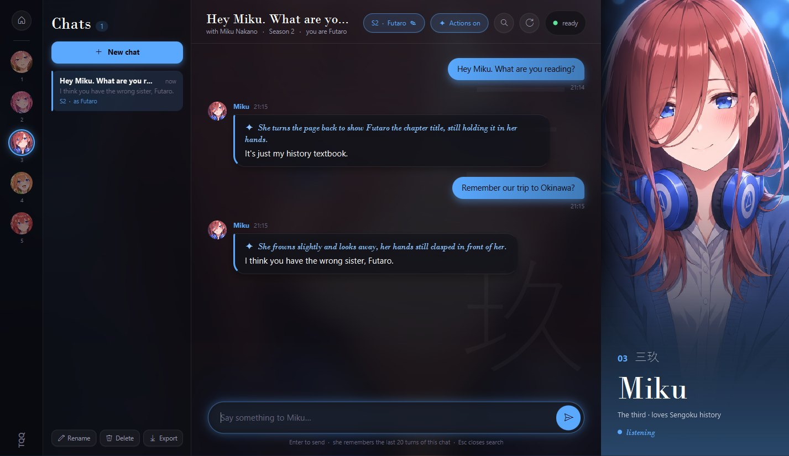

01 · Five fine-tuned models, one app
TQQ Chatbox
A desktop chat app where each of the five Nakano sisters from The Quintessential Quintuplets is her own fine-tuned language model, not one model wearing five costumes. It runs fully offline, and two hidden safety checks re-ask her whenever a reply gets a fact wrong or invents a memory.
Built by Adithya V, computer science student at KCT, Coimbatore.


About TQQ Chatbox
Character chatbots usually run one model in five costumes: they break character, invent memories and need the cloud. In TQQ Chatbox each of the Nakano sisters, Ichika, Nino, Miku, Yotsuba and Itsuki, is her own fine-tuned language model, faithful to The Quintessential Quintuplets and running entirely on a laptop.
The data: every episode's subtitles became one master transcript, cut into each character's real scenes, plus 80 to 212 hand-written chats per character covering facts, traps and "I'm not sure".
The training: QLoRA on Llama-3 8B with Unsloth on a free Colab T4, in 4-bit at rank 16 for two epochs. Each model is merged and exported as an 8.5 GB GGUF file for Ollama.
The safety checks: before you see a reply, word rules and a phi4-mini judge check it for wrong facts and invented memories, and quietly ask the model again when it slips. In testing the judge refused 69 of 70 invented memories with 0 false alarms out of 70.
Related work

More projects by Adithya V
- Ryuu Explainer AIOffline AI assistant
- Personality AICharacter chatbot
- PawFinderWeb platform, live
- Automobile LabHardware and web interface
- CS GPT for CBSE 11 & 12Learning tool
- Ryuu v1 modelsFive open models